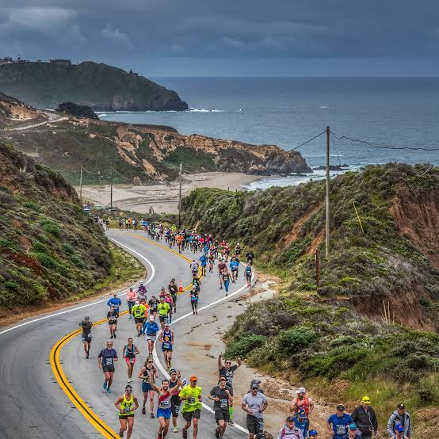
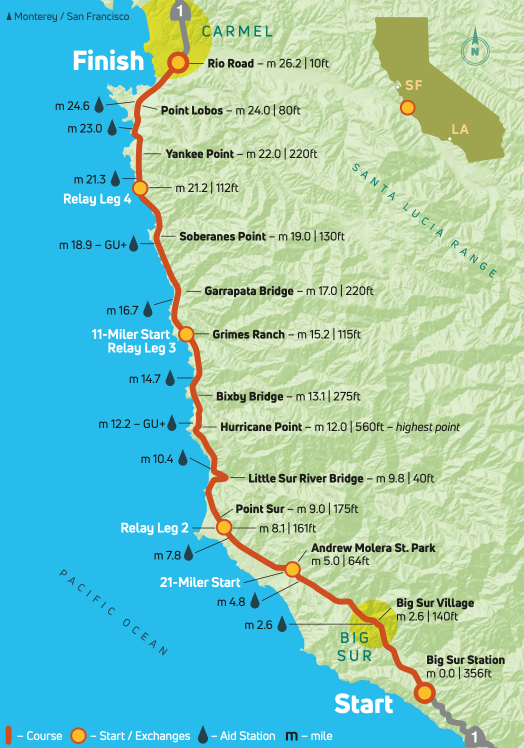
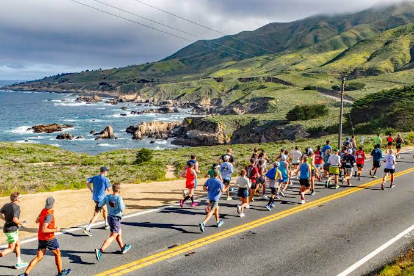

美國大瑟爾國際馬拉松 (Big Sur Marathon)
世界盡頭的懸崖賽道 ｜ 加州一號公路太平洋波濤與比克斯比大橋琴聲交織
創辦於 1986 年，被譽為全球最壯麗、同時也是挑戰難度極高的點對點公路馬拉松。賽道全線沿著加州 1 號太平洋海岸公路延伸，左側為聳立紅杉與千仞絕壁，右側是浩瀚洶湧的太平洋海浪，成績正式獲波士頓 BQ 資格認證。
• 比克斯比大橋琴聲：行經 21km 宏偉拱橋，燕尾服鋼琴家於海風中演奏大三角鋼琴。
• 颶風角魔王長爬升：2 英里內陡升逾 500 英尺，直面太平洋猛烈陣風襲擊。
• 波士頓跨洋雙馬挑戰：獨家推出「Boston 2 Big Sur (B2B)」，6 天內跨州征服兩座傳奇全馬。

賽事基本資訊與核心規格
加州公路巡警嚴格限時封路，點對點淨下降卻暗藏連續起伏之硬核挑戰
• 舉辦月份：每年 4 月最後一個星期日。
• 關門限時：嚴格 6 小時（8:32/km 均速）。
• 起跑時間：上午 6:45 準時分梯次出發。
• 累計爬升：+2,182 呎（約 665 公尺）。
• 累計下降：-2,528 呎（約 770 公尺）。
• 最高點海拔：颶風角 560 呎（約 170 公尺）。
• 路面屬性：傾斜柏油公路與懸崖丘陵。
• 難度分級：高（強逆風與斜坡跑）。
• 通訊警示：全線幾乎完全無手機通訊信號。
• 賽事認證：USATF 美國田總與 AIMS 成員。
• 波士頓門檻：成績完全獲波士頓 BQ 認證採納。
• 賽事組別：包含 21M、11M、12K、5K 與接力。
賽道結構與關鍵魔王路段剖析
穿出紅杉森林擁抱懸崖海岸，迎戰颶風角長陡坡與後半程 13 座滾動丘陵
• 0-5 英里（紅杉林蔭）：大蘇爾州立公園出發，溪流晨霧伴隨平緩微下坡。
• 5-10 英里（駛入海岸）：走出森林進入太平洋海岸，初感海風與連續起伏。
• 12-16 英里（比克斯比橋）：過颶風角後抵達大橋，半程享受鋼琴悠揚樂聲。
• 16-24 英里（滾動丘陵）：13 座丘陵交替，23.2mi 設有招牌草莓補給站。
• 24-26.2 英里（高地衝刺）：攻克 25 英里最後陡坡，直降卡梅爾終點拱門。
• 痛點剖析：在 2 英里（約 3.2km）內持續攀升逾 500 英尺，直攻最高點！此路段常遭遇太平洋撲面強烈逆風甚至暴風雨，瞬間強風吹得跑者難以直立前進。
• 通關策略：主動降速換檔，以心率為主導，身體微向前傾頂風小步前進；切忌硬頂拉爆心肺，頂峰後即可順坡下衝大橋。

報名管道與 Boston 2 Big Sur 雙馬企劃
熱門抽籤與獨家極限挑戰：如何鎖定每年 8 月開放的全美必搶賽事席位
• 登記時程：每年 8 月中旬開放申請。
• 結果公告：9 月初公告中籤名單。
• 扣款規則：中籤自動扣除全馬報名費。
• 退費政策：大會嚴格執行不可退費與延期。
• 極限挑戰：6 天內連續完成波士頓與大蘇爾雙全馬。
• 資格限制：需先取得當年度波士頓馬拉松資格。
• 名額上限：每年僅限 400 名跑者參與。
• 專屬禮遇：專屬 VIP 暖帳、獨立領物與限量完賽夾克。
• Marathon Tours：先到先得購買全包式跑旅方案。
• HOKA VIP 專案：包含終點豪華貴賓帳篷與招待。
• 免抽籤保障：100% 鎖定參賽席位。
• 適合跑者：追求舒適後勤體驗之遠道跑者。
• 青少年健身慈善：名額費用挹注蒙特雷越野基金。
• 合作公益夥伴：承諾達成最低籌款門檻參賽。
• 21M 與 11M 組：9 月中旬開放，先到先得。
• 後備選擇：擔心 6 小時關門跑者可轉戰 21 英里組。
公路全封閉物流、住宿選址與接駁
加州 1 號公路全面封閉禁行私家車：清晨強制搭乘官方接駁巴士出發
• 公路全面禁行：比賽當日 1 號公路全面淨空，嚴禁任何私家車、計程車或步行進入起點。
• 接駁乘車點：所有全馬跑者必須於清晨 3:45 至 4:30 在蒙特雷市中心或卡梅爾搭乘大會免費接駁車。
• 車程時間：巴士行駛約 45 至 60 分鐘抵達大蘇爾起點營地。
• 嚴格安檢：憑號碼布登車，隨身包袋需符合大會透明袋安全規範。
• 首選 A 區（蒙特雷市中心 Monterey）：接駁車最大發車站，鄰近老漁人碼頭與博覽會，餐飲最便利。
• 首選 B 區（卡梅爾小鎮 Carmel）：距離終點馬拉松村最近，完賽後可徒步返回飯店更衣。
• 通盤提醒：起點大蘇爾園區完全無住宿承載力，切勿嘗試訂在賽道起點周邊。
• 博覽會地點：蒙特雷會議中心（Monterey Conference Center）。
• 領物時限：週五與週六開放，賽事當天清晨現場不設領物。
• 寄物規範：使用大會專用透明寄物袋，於起點裝車，直接轉運至卡梅爾終點村提領。
• 通訊備忘：終點信號微弱，賽前務必與同行親友約定好見面標誌帳篷。
海洋氣候數據、防風保暖與補給戰術
起跑 4°C 清冷至海岸 16°C 艷陽：洋蔥式穿著與招牌新鮮草莓補給
• 氣溫區間：4°C 至 16°C（起跑森林極寒，後半程放晴回暖）。
• 強風警報：颶風角與沿海無遮蔽路段常伴隨 25-40 km/h 逆風陣風。
• 海霧特徵：清晨海面常有濃重濕霧，體感濕冷。
• 紫外線強度：午後海面反光強烈，紫外線指數飆升。
• 跑鞋首選：雖然全線為柏油路，但連續下坡與路面斜度大，需選穩定緩震佳之競速鞋。
• 起跑防寒：清晨 4 點在大蘇爾等待起跑長達近兩小時，必備厚保暖舊外套或保暖毯。
• 風衣穿搭：輕量防風背心可有效抵禦颶風角強逆風造成的體溫流失。
• 眼部防護：佩戴專業運動太陽眼鏡，防止強風吹拂與海面反光刺眼。
• 官方水站：每 2 至 3 英里設有水與運動電解質補給站。
• 招牌草莓站：在 23.2 英里處設有著名的加州新鮮甜草莓補給，酸甜多汁迅速補醣。
• 能量膠補給：官方僅在特定站點提供能量膠，強烈建議隨身自備 4-5 條定時食用。
• 關門步速提醒：各站志工嚴格監督 13:45/mi 步速，補給時切忌過度逗留。
賽後文化巡禮與系列下一站
戴上紅木陶土特色獎牌，大啖加州海鮮巧達濃湯，啟航前往非洲狂野大草原
• 蒙特雷老罐頭廠街海鮮盛宴：賽後換裝前往漁人碼頭，品嘗用酸麵包碗盛裝的招牌太平洋巧達蛤蜊濃湯（Clam Chowder）與加州白葡萄酒。
• 卡梅爾文藝小鎮散策：漫步童話般的無門牌藝術畫廊街，在白沙灘吹海風動態排酸。
• 17 哩黃金海岸巡禮（17-Mile Drive）：翌日開車遊覽圓石灘孤柏奇景，回味昨日懸崖征途。
